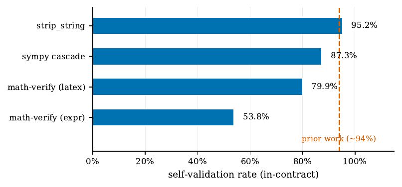
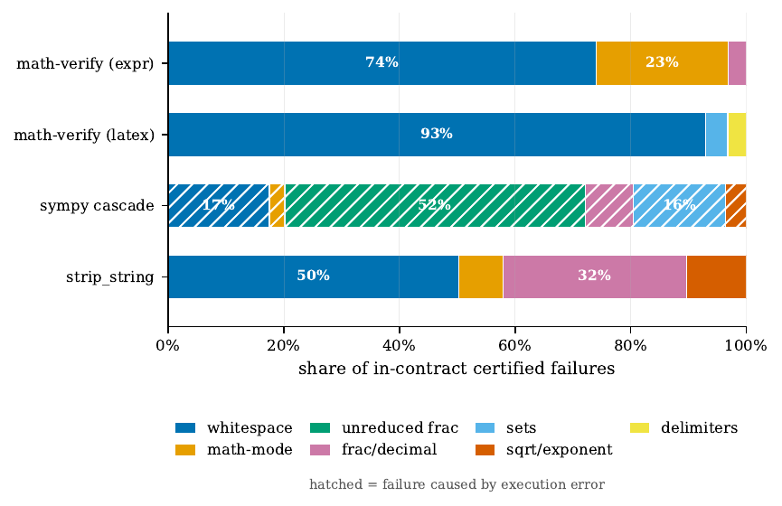
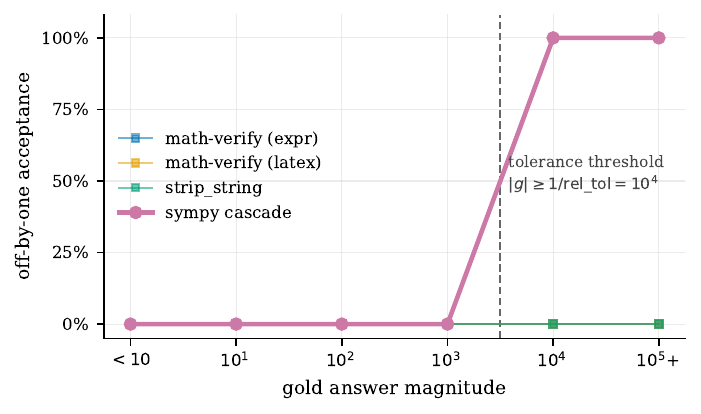

TL;DR. Audit métamorphique certifié de 4 implémentations de vérifieurs de réponses mathématiques (celles qui servent de reward en RLVR) : 43 transformations préservant ou changeant le sens, appliquées à 4 990 réponses gold, 307 420 verdicts ; la fiabilité varie de 53,8 % à 95,2 %, l'essentiel des faux négatifs est de l'hygiène de chaîne (espaces, point final), et une cascade numérique accepte 100 % des réponses off-by-one au-dessus de 10⁴.
Claim principal, précisément. Sur des paires (g, T(g)) où T préserve le sens par construction — donc tout rejet est un faux négatif prouvé, sans arbitrage humain [§2.1] — (1) le taux d'acceptation in-contract va de 53,8 % (mv-expr) à 95,2 % (strip-string), soit 41,3 points d'écart, et deux configurations de la même librairie divergent sur 49,9 % des paires [Tab. 1, Tab. 5] ; (2) 93,0 % des échecs in-contract de mv-latex tombent dans une seule strate, espaces/ponctuation [Tab. 2] ; (3) séparer rejet de échec d'exécution montre que deux vérifieurs à résidu agrégé voisin (12,7 % vs 4,8 %) échouent pour des raisons disjointes, et que la cascade de référence accepte les off-by-one en fonction en escalier de la magnitude — 0 % sous 10⁴, 100 % au-dessus — parce que sa tolérance relative (1e-4) est invariante d'échelle [Tab. 4, §3.3].
Ce que le papier ne fait pas, et le dit : aucun run d'entraînement, aucune mesure de l'effet aval sur une policy [§5 Limitations]. C'est un audit de composant, pas une étude causale.
Ici « tâches » = paires de test soumises au vérifieur, pas des tâches pour un modèle.
Origine. Réponses gold minées dans trois corpus publics, plus une part synthétique : GSM8K [cobbe2021gsm8k], MATH sur les 7 sujets [hendrycks2021math], Big-Math [albalak2025bigmath], plus des réponses synthétiques « in standard MATH answer forms » [§2.5]. Aucune annotation humaine : la vérité terrain est construite par la transformation, pas étiquetée [§2.1, contribution (i)].
Pipeline, étape par étape [§2.1–§2.2, §2.5] :
1. échantillonnage des golds g dans les corpus + synthèse pour les strates sous-peuplées ;
2. application des 43 transformations T → variantes T(g) ;
3. rejet automatique des transformations produisant une sortie vide [§2.2] (et, d'après le code publié, des sorties identiques au gold — if out == gold: return None, src/transforms.py) ;
4. soumission des paires (g, T(g)) aux 4 vérifieurs, chacun dans un sous-processus isolé [§2.6] ;
5. classification du verdict en TRUE | FALSE | TIMEOUT | ERROR ;
6. filtrage par la matrice de contrat : une strate hors contrat pour un vérifieur est rapportée mais jamais comptée comme défaut [§2.2, Tab. 7].
Volume. 4 990 golds uniques · 43 transformations · 14 strates · 4 verifiers → 307 420 verdicts [§1, §2.2].
Décomposition (absente du papier ; recalculée par moi depuis results/T0_raw_counts.csv du dépôt, somme exacte = 307 420) :
| Classe de transformation | n verdicts |
|---|---|
certified_equiv (total) |
125 064 |
| dont in-contract (base des chiffres headline) | 114 055 |
| dont out-of-contract | 11 009 |
contract_dep |
132 240 |
adversarial |
50 116 |
⚠️ Le chiffre de 307 420 est le total brut, pas la base des résultats. Le résultat principal (auto-validation 53,8–95,2 %) repose sur 114 055 verdicts, soit 37 % du total annoncé. Le papier ne donne nulle part cette ventilation ; elle n'est reconstructible que depuis les CSV publiés.
Distribution de difficulté — ici, poids des strates. Très déséquilibrée, et ce déséquilibre porte le résultat headline [Tab. 3, recalculé depuis T0] : S6 whitespace n = 15 704 (50 % des paires certified-equiv), S5 math-mode n = 4 951, S1 frac-dialect n = 4 146, S14 unreduced n = 2 062, S2 frac/decimal n = 1 725, S4 delimiters n = 1 067, S10 sets n = 634, S9 grouping n = 573, S7 sqrt/exp n = 404.
⚠️ La strate qui domine le budget d'erreur est aussi celle qui domine l'échantillon. « Whitespace = 93,0 % des échecs » est en partie une conséquence de ce que 50 % des paires sont des paires whitespace. Le papier ne le discute pas. Les taux par strate [Tab. 3] ne souffrent pas de ce biais ; les parts [Tab. 2] si.
Filtrage par pass@k du modèle de base : sans objet, aucun modèle.
Curriculum : sans objet, procédure batch unique.
Contamination / séparation train-test : sans objet — aucun apprentissage, aucun split. La question pertinente (les golds sont-ils représentatifs des sorties réelles d'un modèle ?) est traitée en limitation : « real outputs do not produce transform variants at equal rates » [§5].
Données SFT/IFT : sans objet.
Coût humain. Aucune annotation — c'est le cœur du design [§2.1 : « ground truth is free »]. Le seul jugement humain est l'assignation des contrats : les auteurs écrivent explicitement « the contract assignments are a judgement call and are published in the released code so that they can be contested » [§2.2]. ⚠️ Ce jugement n'est pas neutre — voir §7.0, entrée « identical inputs ».
Contradiction interne sur le volume. §2.5 écrit « 4 990 unique gold answers drawn from GSM8K, MATH, Big-Math, plus 2 000 synthetic answers », ce qui se lit 6 990 ; §5 Limitations écrit « 2 000 of 4 990 golds are synthetic ». Les deux ne peuvent pas être vraies. Vérification : dans T0_raw_counts.csv, la transformation A06_garbage (qui s'applique à tout gold sans condition, cf. t_adv_append_garbage) a n = 4 990 → le total de golds est 4 990, dont 2 000 synthétiques. §2.5 est faux, §5 est juste. Voir §7.0.
Le « harness » audité est l'objet d'étude. Deux niveaux : le harness d'audit, et les 4 vérifieurs sous test.
(gold, variante). Rien d'autre — pas d'énoncé de problème, pas de trace de raisonnement.TRUE | FALSE | TIMEOUT | ERROR (le README du dépôt ajoute CRASH). Le point méthodologique central est de ne pas collapser ERROR/TIMEOUT sur FALSE [§2.3].PER_ITEM_TIMEOUT_S = 5, CHUNK_WALL_TIMEOUT_S = 900 (README).n_eval = n_TRUE + n_FALSE, coverage = n_eval / n ; les deux taux (sur n et sur n_eval) sont rapportés ; les cellules à couverture nulle rapportent n/a, jamais 0 [§2.3, Tab. 3]. Justification donnée : un vérifieur qui crashe sur toute une strate serait sinon crédité d'un taux de faux positifs de 0,0 %, lu comme « a correctement rejeté » [§2.3]. Couverture in-contract globale : 96,5 % [§2.3 ; confirmé summary.json = 0,96522].
⚠️ Le cas pathologique décrit en §2.3 se produit réellement dans les données, et le papier ne le relève pas : sympy-cascade a coverage = 0,0 sur toute la strate adversariale A_append (4 990/4 990 ERROR, T3_fp_by_stratum_verifier.csv). Sans le correctif de couverture, il aurait affiché 0 % de faux positifs sur des réponses « gold + and also 999 ». Le garde-fou fonctionne — c'est un argument fort pour l'importer tel quel.| Étiquette | Implémentation |
|---|---|
mv-latex (V2) |
math-verify [mathverify2025] avec extraction LaTeX (défaut de la librairie) |
mv-expr (V1) |
math-verify, restreint à l'extraction d'expression simple (ExprExtractionConfig, d'après le README) |
strip-string (V3) |
normalizer de chaînes de la lignée DeepSeek-Math [shao2024deepseekmath] |
sympy-cascade (V4) |
cascade de référence à 3 niveaux écrite pour ce papier : chaîne exacte → numérique avec tolérance relative 1e-4 → symbolique via SymPy |
⚠️ « four widely used verifiers » (abstract) est inexact : V1 et V2 sont deux configurations de la même librairie, et V4 est une cascade de référence construite par l'auteure, pas une implémentation déployée. Il y a deux librairies réellement en usage (math-verify, strip_string). Voir §7.0.
Tab. 8 (App. A), intégralement :
| Gold | Variante | Rejetée par |
|---|---|---|
\frac{1}{2} |
\frac{1}{2}. |
V2, V1 |
\frac{1}{2} |
\frac{1}{2}\n |
V2, V1 |
\frac{1}{2} |
\dfrac{1}{2} |
V1 |
(a+5)(b+2) |
\left(a+5\right)\left(b+2\right) |
V1 |
3\pm\sqrt{2} |
3\,\pm\,\sqrt{2} |
V3 |
Légende du papier : « A trailing period changes the verdict. »
C'est le sujet entier du papier. Contenu réparti ici, en §5 (taxonomie) et en §7 (chiffres).
Positionnement revendiqué par rapport au taux de FN de ~38 % de [cai2025noisy] : « Reported false-negative rates near 38 % are measured on real model outputs, which include mathematical non-equivalences such as unreduced fractions. Our measurement isolates the formatting and equivalence component under certified transformations and is therefore a lower bound on that quantity. » [§4] — bornage honnête, à retenir.
Sans objet. Aucun algorithme d'apprentissage, aucun hyperparamètre de RL, aucune courbe de reward, aucun compute GPU. Limitation assumée : « No training runs. We do not measure downstream RLVR effect » [§5], qui renvoie à [zhang2026leaky] pour un contraste causal préenregistré en code RLVR (effets « bounded »).
Le papier se positionne comme fournisseur de paramètres pour deux cadres d'optimisation existants [§1, §6] : - [cai2025noisy] modélisent le vérifieur comme canal de reward stochastique à bruit asymétrique (ρ₀ faux positif, ρ₁ faux négatif) et dérivent des corrections du gradient de politique ; la correction « forward » ne requiert que le taux de faux négatifs en entrée [§1]. → c'est exactement ce que ce papier mesure. - [egashira2026delay] montrent que les erreurs de vérifieur sont systématiques et non aléatoires, et que l'issue (plateau vs collapse) est déterminée par le motif d'erreur, pas par le taux agrégé [§1]. → le seuil à 10⁴ est qualifié par l'auteure de « maximally systematic » [§1, §4].
⚠️ Le chaînage est argumenté, jamais exécuté : personne ne branche les ρ mesurés dans la correction de [cai2025noisy], ni ne vérifie que le seuil à 10⁴ produit le plateau prédit par [egashira2026delay]. C'est la plus grande faiblesse du papier et la plus grande opportunité pour qui veut le prolonger.
| Classe | Définition (recopiée) | Verdict scoré |
|---|---|---|
CERTIFIED-EQUIV |
« mathematically identical and within the verifier's declared contract » | rejet = faux négatif certifié |
CONTRACT-DEP |
« depend on the declared contract (boxing, units, text wrappers) » | rapporté comme ambiguïté de spécification, jamais comme défaut |
ADVERSARIAL |
« change meaning » | acceptation = faux positif certifié |
⚠️ Le papier ne publie pas la liste. Il donne « 43 transformations across 14 strata » [§2.2] et ne nomme que 9 strates au fil des tableaux (S1, S2, S4, S5, S6, S7, S9, S10, S14). Les strates S3, S8, S11, S12, S13 n'apparaissent nulle part dans le texte ; les noms des 43 transformations, non précisés. L'énumération ci-dessous vient du registre TRANSFORMS de src/transforms.py dans le dépôt publié (lu le 2026-09-30), pas du papier. Le compte y est exact : 25 + 12 + 6 = 43, S1…S14 = 14 strates.
CERTIFIED-EQUIV — 25 transformations, 9 strates
| Strate | Transformations (id du dépôt) | Nature |
|---|---|---|
| S1 frac dialect | T01_dfrac, T02_tfrac, T03_cfrac, T04_frac_to_slash, T05_slash_to_frac |
\frac ↔ \dfrac/\tfrac/\cfrac ↔ a/b |
| S2 frac ↔ decimal | T06_frac_to_dec, T07_dec_to_frac, T08_trailing_zeros, T09_add_point_zero |
1/2 ↔ 0.5, zéros terminaux, 3 → 3.0 |
| S4 delimiters | T14_left_right, T15_strip_lr |
ajout/retrait de \left…\right |
| S5 math-mode | T16_dollar |
encadrement par $…$ |
| S6 whitespace / ponctuation | T19_pad_spaces, T20_trailing_dot, T21_newline, T22_thin_space |
espaces, point final, retour ligne, \, |
| S7 sqrt / exp | T23_sqrt_brace, T24_sqrt_unbrace, T25_exp_brace |
\sqrt2 ↔ \sqrt{2}, accolades d'exposant |
| S9 grouping | T27_comma_thousands |
virgules de milliers |
| S10 sets / intervals | T28_set_reorder, T29_infty_spelling |
réordonnancement d'ensemble, orthographe de \infty |
| S14 unreduced | T37_unreduced_x2, T38_unreduced_x3, T39_unreduced_x12 |
1/3 → 12/36 (équivalence mathématique, pas de format) |
CONTRACT-DEP — 12 transformations, 5 strates (jamais comptées comme défauts)
| Strate | Transformations | Nature |
|---|---|---|
| S3 boxing | T10_add_boxed, T11_add_fbox, T12_double_boxed, T13_prefix_boxed |
\boxed{}, \fbox{}, boxed imbriqué, préfixe |
| S8 scientific | T26_scientific |
notation scientifique |
| S11 text wrappers | T30_wrap_text, T31_answer_prefix, T32_mathrm |
\text{}, « The answer is », \mathrm{} |
| S12 units | T33_unit_cm, T34_dollar_sym |
unité suffixe, symbole monétaire |
| S13 percent | T35_pct_to_dec, T36_dec_to_pct |
0.5 ↔ 50 % |
ADVERSARIAL — 6 transformations, 5 strates
| Strate | Transformation | Nature |
|---|---|---|
A_scale |
A01_times_100, A02_div_100 |
×100, ÷100 |
A_sign |
A03_sign_flip |
changement de signe |
A_offset |
A04_off_by_one |
+1 (sonde de la tolérance relative) |
A_digit |
A05_digit_swap |
permutation des deux premiers chiffres |
A_append |
A06_garbage |
gold + " and also 999" |
Matrice de contrat (recopiée de CONTRACTS, src/transforms.py ; True = le vérifieur prétend gérer, un échec est un bug ; strates absentes → DEFAULT_IN_CONTRACT = True, ce qui met S5 in-contract pour les 4) :
| Strate | mv-latex |
mv-expr |
strip-string |
sympy-cascade |
|---|---|---|---|---|
| S1 frac dialect | ✓ | ✗ | ✓ | ✓ (défaut) |
| S2 frac/decimal | ✓ | ✓ | ✓ | ✓ (défaut) |
| S4 delimiters | ✓ | ✗ | ✓ | ✓ (défaut) |
| S5 math-mode | ✓ (défaut) | ✓ (défaut) | ✓ (défaut) | ✓ (défaut) |
| S6 whitespace | ✓ | ✓ | ✓ | ✓ (défaut) |
| S7 sqrt/exp | ✓ | ✗ | ✓ | ✓ (défaut) |
| S9 grouping | ✓ | ✓ | ✓ | ✓ (défaut) |
| S10 sets | ✓ | ✗ | ✗ | ✓ (défaut) |
| S14 unreduced | ✓ | ✗ | ✗ | ✓ |
| n in-contract | 31 266 | 22 953 | 28 570 | 31 266 |
⚠️ sympy-cascade n'a qu'une seule entrée explicite dans la matrice (S14: True) ; ses 8 autres strates sont in-contract par défaut, pas par décision. Le vérifieur le plus sévèrement jugé sur S10 et S14 (couverture nulle, n/a) l'est donc par un défaut de code, pas par une spécification. Non discuté dans le papier.
(A) Faux négatifs certifiés — le vérifieur rejette une réponse correcte. Taux par strate [Tab. 3, IC Wilson 95 %], calculés sur les verdicts réellement rendus :
| Strate | Vérifieur | n | FN | IC 95 % |
|---|---|---|---|---|
| S6 whitespace | mv-expr |
15 704 | 50,0 % | [49,2 – 50,8] |
| S5 math-mode | mv-expr |
4 951 | 48,8 % | [47,4 – 50,2] |
| S10 sets | mv-latex |
634 | 37,5 % | [33,9 – 41,4] |
| S6 whitespace | mv-latex |
15 704 | 37,2 % | [36,5 – 38,0] |
| S7 sqrt/exp | strip-string |
404 | 35,1 % | [30,7 – 39,9] |
| S2 frac/decimal | strip-string |
1 725 | 25,4 % | [23,4 – 27,5] |
| S2 frac/decimal | mv-expr |
1 725 | 19,1 % | [17,3 – 21,0] |
| S4 delimiters | mv-latex |
1 067 | 18,7 % | [16,5 – 21,2] |
| S6 whitespace | strip-string |
15 704 | 4,4 % | [4,1 – 4,8] |
| S5 math-mode | strip-string |
4 951 | 2,1 % | [1,8 – 2,6] |
| S7 sqrt/exp | mv-latex |
404 | 0,2 % | [0,0 – 1,4] |
| S14 unreduced | mv-latex |
2 062 | 0,0 % | [0,0 – 0,2] |
| S1 frac dialect | mv-latex |
4 146 | 0,0 % | [0,0 – 0,1] |
| S9 grouping | tous | 573 | 0,0 % | [0,0 – 0,7] |
| S10 sets | sympy-cascade |
634 | n/a (couverture 0) | — |
| S14 unreduced | sympy-cascade |
2 062 | n/a (couverture 0) | — |
strip-string, qui normalise bien les espaces (4,4 % de FN sur S6), échoue lourdement ailleurs (35,1 % sur S7, 25,4 % sur S2), ce qui suggère qu'aucune implémentation ne domine et que le correctif « trivial » ne suffit pas.(B) Échec d'exécution — pas de verdict du tout.
sympy-cascade : couverture 87,3 %, 3 967 échecs in-contract, 100 % des échecs sont des ERROR, 0 FALSE, 0 TIMEOUT (T6_reconciliation.csv) ; concentrés sur S14 (2 062), S10 (634), S6 (694), S2 (330), S7 (142). Les 3 autres vérifieurs : couverture 100,0 % [Tab. 1].
- Détection : uniquement grâce au dénominateur n_eval [§2.3].
- Effet si on ne sépare pas : sympy-cascade (12,7 % de résidu) et strip-string (4,8 %) paraissent comparables, alors que le premier est correct sur 100 % de ce qu'il juge et le second se trompe en rejetant. « Different defects requiring different fixes » [§3.1, §4]. ✅ Le point le plus réutilisable du papier.
(C) Faux positifs certifiés — le vérifieur accepte une réponse fausse.
Table complète recalculée depuis T3_fp_by_stratum_verifier.csv (le papier ne publie que la ligne off-by-one, Tab. 4) :
| Strate adversariale | Vérifieur | n | couverture | FP acceptés | taux FP |
|---|---|---|---|---|---|
A_offset (off-by-one) |
sympy-cascade |
1 287 | 100 % | 206 | 16,0 % [14,1 – 18,1] |
A_append (« and also 999 ») |
mv-expr |
4 990 | 100 % | 1 | 0,02 % [0,004 – 0,11] |
A_append |
sympy-cascade |
4 990 | 0 % (4 990 ERROR) |
— | n/a, pas 0 |
A_scale |
sympy-cascade |
3 209 | 86,3 % (439 ERROR) |
0 | 0 % |
A_sign |
sympy-cascade |
2 104 | 61,2 % (816 ERROR) |
0 | 0 % |
| toutes autres cellules | V1–V3 | — | 100 % | 0 | 0 % |
Taux FP adversarial global sur verdicts rendus : 0,47 % (summary.json).
sympy-cascade passe par un niveau numérique à tolérance relative 1e-4. Une tolérance relative est invariante d'échelle : pour un gold de 10 000, la valeur 10 001 diffère de 0,01 % < 1e-4 → acceptée. D'où une fonction en escalier déterministe au seuil |g| ≥ 1/rel_tol = 10⁴ : 0,0 % d'acceptation dans les buckets < 10, 10–100, 100–1k, 1k–10k ; 100,0 % dans 10k–100k (n = 131) et > 100k (n = 75). Les 3 autres vérifieurs rejettent 100 % des off-by-one à toutes les magnitudes.(D) Incomparabilité entre papiers — ambiguïté de contrat.
Acceptation sur classes contract-dépendantes [Tab. 6, App. A] ; sympy-cascade omis car il ne rend aucun verdict sur boxed ni scientific :
| Classe d'entrée | n | mv-expr |
mv-latex |
strip-string |
|---|---|---|---|---|
| boxed | 19 952 | 8,0 | 75,1 | 0,0 |
| scientific | 326 | 0,0 | 100,0 | 0,0 |
| with unit | 2 782 | 50,0 | 100,0 | 100,0 |
| text prefix (« The answer is ») | 9 980 | 28,2 | 39,6 | 48,9 |
| percent | 20 | 0,0 | 100,0 | 0,0 |
Acceptation de 0 % à 100 % sur entrées identiques. « These are not defects — each implementation behaves as designed — but the differences are undocumented » [§3.4]. Conséquence mesurée : 49,9 % de désaccord entre deux configurations de la même librairie sur 31 266 paires jugées par les deux [Tab. 5].
Matrice de désaccord complète [Tab. 5a, App. A] :
V1 mv-expr |
V2 mv-latex |
V3 strip |
V4 sympyc |
|
|---|---|---|---|---|
| V1 | — | 49,9 | 48,0 | 53,4 |
| V2 | 49,9 | — | 31,4 | 22,0 |
| V3 | 48,0 | 31,4 | — | 0,4 |
| V4 | 53,4 | 22,0 | 0,4 | — |
(Support : 31 266 paires pour V1–V3, 27 299 dès que V4 est impliqué [Tab. 5b].) ⚠️ Le désaccord V3↔V4 de 0,4 % est frappant et non commenté : un normalizer de chaînes et une cascade symbolique convergent presque parfaitement, tandis que deux configs du même paquet divergent une fois sur deux. C'est l'argument le plus fort du papier, et il n'est pas mis en avant.
(E) Comportement hors contrat [Tab. 7, App. A] — rapporté, jamais compté comme défaut :
strip-string rejette 100,0 % de S10 (n = 634) ; mv-expr rejette 100,0 % de S14 (n = 2 062), 97,5 % de S10, 93,8 % de S1 (n = 4 146), 87,1 % de S4, 31,4 % de S7 ; strip-string rejette 100,0 % de S14.
Comportements émergents : sans objet (pas de policy).
pipelines.yml et submitjob.ipynb présents au dépôt.env/conda.yml présent, ANTLR4 épinglé 4.13.2, math-verify 0.9.0.src/run_audit.py, src/build_dataset.py et results/raw/ (« one record per (gold answer, transformation, verifier) triple … This is the 307,420-verdict corpus ») — les trois renvoient HTTP 404 (vérifié le 2026-09-30 via l'API GitHub). Le dépôt contient aggregate.py, differential_verify.py, normalizers.py, prepare_gold.py, transforms.py, verifiers.py et 9 CSV agrégés (T0–T8 + digest_v6.txt, summary.json, tables.md). Or « per-sample verdict records » est annoncé dans le commentaire arXiv et dans la contribution (v) [§1]. La revendication de publication est partiellement fausse — voir case repro.Méthode : chaque chiffre de l'abstract et de l'intro, retrouvé dans le corps, les annexes, et recalculé par moi depuis les CSV publiés au dépôt (T0_raw_counts.csv re-agrégé, T3, T4, T6, T8, summary.json).
| Chiffre annoncé | Où il est annoncé | Source dans le papier | Verdict |
|---|---|---|---|
| ~94 % d'auto-validation de la vérité terrain par un harness standard | abstract, §1 | [hfguidebook], note bib : « reports approximately 94 % self-validation » | confirmé en tant que citation (source primaire HF non vérifiée par moi) |
| 307 420 verdicts | abstract, §1, §1 contrib. (ii) | §2.2 | confirmé — somme exacte des n de T0_raw_counts.csv = 307 420 |
| 4 vérifieurs « widely used » | abstract, §1 | §2.4 | sur-généralisé — V1/V2 sont deux configurations de la même librairie (math-verify 0.9.0) et V4 est une cascade de référence écrite pour le papier (« a reference three-level cascade », §2.4). 2 librairies réellement déployées, pas 4 |
| 43 transformations, 14 strates | abstract, §1, §2.2 | §2.2 | confirmé — registre TRANSFORMS : 25 + 12 + 6 = 43 ; strates S1…S14 = 14 |
| Auto-validation de 53,8 % à 95,2 %, écart 41,3 points | abstract, §1, §3.1 | Tab. 1 | confirmé — je reproduis 53,8 / 79,9 / 87,3 / 95,2 à 0,1 près depuis T0 |
| « on identical inputs » (répété 3× : abstract, §1, légende Tab. 1) | abstract, §1, Tab. 1 | Tab. 1 | contredit par le papier lui-même : la colonne n de Tab. 1 donne 22 953 / 28 570 / 31 266 / 31 266. La restriction in-contract fait que les 4 taux portent sur des sous-ensembles de strates différents (mv-expr n'est scoré que sur S2, S5, S6, S9 — dont 68 % de whitespace, sa pire strate). Re-analyse (moi, depuis T0) : sur les 4 strates communes aux 4 vérifieurs, n = 22 953 strictement identique → 53,8 (mv-expr) / 74,5 (mv-latex) / 94,6 (strip) / 95,1 (sympy-cascade), écart = 41,3 points. Le chiffre headline survit, mais (a) il n'est pas établi par le tableau du papier, (b) le classement s'inverse en tête** — sympy-cascade passe devant strip-string |
| 49,9 % de désaccord entre deux configs de la même librairie | abstract, §1, §3.4 | Tab. 5a | confirmé — T4_disagreement_matrix.csv = 0,49904 ; support 31 266 paires jugées par les deux [Tab. 5b] |
93,0 % des échecs in-contract de mv-latex = whitespace/ponctuation |
abstract, §1, §3.2 | Tab. 2 | confirmé — 5 846 / 6 285 = 93,0 % (recalculé) |
74,1 % pour mv-expr |
abstract, §1, §3.2 | Tab. 2 | confirmé — 7 852 / 10 598 = 74,1 % |
| Off-by-one : 0 % sous 10⁴, 100 % à partir de 10⁴ | abstract, §1, §3.3 | Tab. 4 | confirmé — T8 : 0/20, 0/134, 0/560, 0/367 puis 131/131 et 75/75. ⚠️ le saut repose sur 206 acceptations dans les deux derniers buckets |
| Taux FP off-by-one agrégé 16,0 %, IC [14,1 – 18,1], n = 1 287 | §3.3, Tab. 4 | Tab. 4 | confirmé — 206/1 287 = 16,004 % ; IC reproduit par T3 |
Résidus agrégés 12,7 % (sympy-cascade) et 4,8 % (strip-string) |
§4 | Tab. 1 | confirmé — 100 − 87,3 et 100 − 95,2 |
sympy-cascade « correct on every input it judges » |
abstract-adjacent (§1, §3.1) | Tab. 1, col. Judged = 100,0 % | confirmé — T6 : n_false = 0, résidu = 3 967 ERROR |
| Couverture in-contract globale 96,5 % | §2.3 | §2.3 | confirmé — summary.json = 0,96522 |
| Robustesse corpus-only : 57,5 / 84,1 / 87,8 / 88,3 | §3.5 | §3.5 | introuvable — aucun tableau, aucun CSV publié ne porte le flag synthétique/corpus. Non vérifiable en l'état |
| « 4 990 golds … plus 2 000 synthetic » | §2.5 | §5 dit « 2 000 of 4 990 golds are synthetic » | contredit (interne) : 6 990 vs 4 990. Arbitrage : A06_garbage s'applique à tout gold et a n = 4 990 (T0) → total = 4 990 golds, dont 2 000 synthétiques. §2.5 est mal écrit, §5 est juste |
Libellés de magnitude de Tab. 4 (<10, 10¹, 10², 10³, 10⁴, >10⁵) |
Tab. 4 | T8 : <10, 10-100, 100-1k, 1k-10k, 10k-100k, >100k |
sur-généralisé / mal libellé — les n correspondent exactement, mais la ligne étiquetée « 10³ » est en réalité le bucket 1k–10k. Cosmétique, sans effet sur la conclusion |
| Contribution (v) : « released … per-sample verdict records » | §1, commentaire arXiv | dépôt GitHub | contredit — results/raw/, src/run_audit.py, src/build_dataset.py : HTTP 404 au 2026-09-30. Seuls les agrégats T0–T8 sont publiés |
Bilan 7.0 : 11 confirmés (dont 8 que j'ai recalculés depuis les données brutes publiées — c'est rare et ça mérite d'être noté), 3 contredits, 2 sur-généralisés, 1 introuvable. Les résultats numériques sont solides ; ce qui lâche, c'est le cadrage (« identical inputs », « four widely used verifiers », « per-sample records released ») et une contradiction de volume.
| Vérifieur | n in-contract | Auto-validation (tous inputs) | Couverture | Correct sur ce qu'il juge |
|---|---|---|---|---|
strip-string |
28 570 | 95,2 % | 100,0 % | 95,2 % |
sympy-cascade |
31 266 | 87,3 % | 87,3 % | 100,0 % |
mv-latex (défaut de librairie) |
31 266 | 79,9 % | 100,0 % | 79,9 % |
mv-expr |
22 953 | 53,8 % | 100,0 % | 53,8 % |
[Tab. 1]. Écart absolu headline : 41,3 points. Référence publiée (~94 %) située « near the top of this range rather than at its centre » [§3.1].
Part de masse d'erreur, top-2 strates [Tab. 2] : mv-expr S6 74,1 % / S5 22,8 % · mv-latex S6 93,0 % / S10 3,8 % · strip-string S6 50,3 % / S2 31,7 % · sympy-cascade S14 52,0 % / S6 17,5 % (toutes des exceptions de parsing, pas des rejets).
mv-expr), 84,1 % (mv-latex), 87,8 % (strip-string), 88,3 % (sympy-cascade) ; « ordering and magnitude are preserved » [§3.5]. ⚠️ L'ordre n'est en fait pas préservé : strip-string (95,2 → 87,8) passe derrière sympy-cascade (87,3 → 88,3). L'écriture du papier est inexacte sur son propre résultat de robustesse. Et l'écart tombe de 41,3 à 30,8 points sans les synthétiques.Trois séparations font office d'ablation, chacune isolant une contribution revendiquée :
1. in-contract vs out-of-contract [Tab. 7] : sans elle, mv-expr afficherait des « défauts » sur S1 (93,8 % de rejet) et S14 (100 %), strates qu'il ne prétend pas gérer. Isole « défaut d'implémentation » de « ambiguïté de spécification ».
2. rejet vs échec d'exécution (couverture) [Tab. 1, T6] : sans elle, sympy-cascade et strip-string paraissent similaires (12,7 % vs 4,8 %) alors que le premier a 0 rejet erroné. Isole availability de accuracy. L'ingrédient qui compte le plus.
3. stratification par magnitude [Tab. 4] : sans elle, l'off-by-one de sympy-cascade est un taux de 16 %, pas un seuil déterministe à 10⁴. Isole le motif systématique du taux moyen.
Sans objet (pas de modèle). Le seul axe d'échelle est le nombre de verdicts : l'auteure souligne que le design est combinatoire en golds × transforms × verifiers et CPU-only [§2.1] — l'échelle est donc gratuite, ce qui explique les IC Wilson à ±0,8 point sur S6 (n = 15 704) [§3.2].
math-verify 0.9.0, ANTLR4 4.13.2), confrontation explicite à la seule figure publiée (~94 %). ⚠️ mais 2 des 4 « vérifieurs » sont la même librairie et 1 est maison.n rapporté partout, cellules à couverture nulle en n/a. Procédure déterministe, donc les seeds sont sans objet ; le Wilson est la bonne quantification.sympy-cascade y est in-contract par défaut de code sur 8 strates sur 9.results/raw/ (les verdicts par échantillon, annoncés dans le commentaire arXiv et la contribution (v)), src/run_audit.py et src/build_dataset.py renvoient 404. Le pipeline qui produit les 307 420 verdicts n'est pas publié ; seuls les CSV agrégés le sont. On peut re-vérifier l'arithmétique des tableaux, pas la génération des verdicts.n de Tab. 1 ; 4 990 « plus » 2 000 (§2.5) contre 2 000 « of » 4 990 (§5) ; « ordering … preserved » (§3.5) alors que l'ordre s'inverse. Aucun n'invalide un résultat, tous auraient été attrapés par une relecture.| Case | Verdict | Justification |
|---|---|---|
baselines |
✅ | 4 implémentations, mêmes inputs générés, versions et runtime épinglés, référence publiée confrontée |
ablation |
✅ | in/out-of-contract, couverture vs rejet, stratification par magnitude — chacune chiffrée et décisive |
variance |
✅ | IC Wilson 95 % sur chaque cellule, n partout, n/a au lieu de 0 sur couverture nulle |
coherence |
❌ | « identical inputs » (3 occurrences) contredit par Tab. 1 ; contradiction 4 990/6 990 entre §2.5 et §5 ; « ordering preserved » faux en §3.5 |
eval |
✅ | vérité terrain construite, transformations publiées et vérifiables, pas de juge, pas de contamination possible |
repro |
❌ | results/raw/, run_audit.py, build_dataset.py → HTTP 404 (2026-09-30) ; les « per-sample verdict records » annoncés n'existent pas au dépôt |
evidence = 4/6, evidence_manquant: [coherence, repro].
Solide sur la mesure, fragile sur le cadrage et sur la publication des données. Les quatre chiffres qui comptent (41,3 points d'écart, 49,9 % de désaccord intra-librairie, 93,0 % de masse d'erreur sur les espaces, seuil à 10⁴) se reproduisent exactement depuis les CSV publiés, y compris après ma re-analyse sur inputs strictement identiques. C'est nettement mieux que la moyenne. Mais : aucun correctif testé, aucun effet sur une policy mesuré, suite adversariale étroite (6 transformations numériques), verdicts par échantillon annoncés et absents, et trois incohérences d'écriture évitables. Auteure isolée sans affiliation, 1 citation — à traiter comme une source de chiffres fiables et d'un protocole réutilisable, pas comme une référence d'autorité. Je le classe A pour le protocole (§2.3 couverture, §2.2 matrice de contrat, §2.1 équivalence certifiée), pas pour ses conclusions sur LaTeX.

Ce qu'il faut voir : l'écart de 41,3 points entre quatre programmes censés calculer la même chose, et la position de la ligne pointillée — la figure ~94 % de la littérature [hfguidebook] est au-dessus de trois des quatre implémentations, y compris au-dessus du défaut de la librairiemath-verify (79,9 %). Un praticien qui lit « 94 % » et utilise la config par défaut perd en réalité 20 % de ses réponses correctes, pas 6 %. (Nom de fichier trompeur : c'est la Figure 1 du PDF.)

Ce qu'il faut voir : deux lectures. (a) Pour les deux configsmath-verify, la barre est quasi monochrome — 93 % et 74 % d'une seule strate, whitespace/ponctuation. Le budget d'erreur n'est pas une longue traîne de cas de grammaire difficiles, c'est un point final et un retour à la ligne. (b) Les hachures : toute la barre sympy cascade est hachurée, c'est-à-dire que 100 % de ses échecs sont des erreurs d'exécution, pas des rejets — la même hauteur de barre que les autres recouvre une pathologie entièrement différente. C'est l'argument « coverage is a first-class metric » rendu visible en un coup d'œil.

Ce qu'il faut voir : le failure mode de reward hacking le plus net du corpus. La cascade de référence passe de 0 % à 100 % d'acceptation de réponses fausses exactement au seuil|g| ≥ 1/rel_tol = 10⁴. Ce n'est pas du bruit, c'est une porte : au-delà de 10 000, une policy est récompensée pour une réponse fausse à +1 systématiquement. Le taux agrégé (16,0 %) rend ce comportement invisible — c'est l'illustration du point de [egashira2026delay] sur le motif d'erreur contre le taux.
| Ingrédient | Choix du papier | Équivalent juridique | Transfert | Ce qui manque |
|---|---|---|---|---|
| Source des tâches | Golds minés (GSM8K/MATH/Big-Math) + 2 000 synthétiques pour les strates sous-peuplées (les ensembles/intervalles n'apparaissent que dans 0,1 % du corpus, §2.5) | Réponses de référence sur un corpus juridique (Harvey LAB, Vals) + synthèse ciblée pour les formes rares : citations étrangères, abrogations, conflits de juridiction | adaptable | En droit la « réponse gold » est un texte long et argumenté, pas une chaîne courte. La synthèse ciblée de formes rares transfère ; la notion de gold unique, non |
| Vérifieur | Règles / normalisation / équivalence symbolique, binaire, outcome-only. Aucun juge LLM | Juge LLM sur rubrique, obligatoirement | non (le mécanisme) / direct (la méthode d'audit) | Le papier n'audite aucun juge LLM ; il n'a donc rien à dire sur l'accord inter-juges, la dérive de prompt, ni la sensibilité à la position |
| Équivalence certifiée par construction (§2.1) | 25 transformations qui préservent le sens mathématique par construction → tout rejet est un FN prouvé, sans arbitre | Existe en droit, et abondamment : variantes de citation (« Cass. civ. 1re, 12 janv. 2020, n° 18-12.345 » ↔ « Cass. 1re civ., 12 janvier 2020, pourvoi n° 18-12.345 »), Bluebook vs citation neutre, numérotation d'articles (« art. L. 441-6 » ↔ « article L441-6 »), synonymes normés (« résiliation » ↔ « résolution » : non, justement — c'est la frontière), ordre de deux moyens équivalents, ECLI vs référence nationale | direct | Il faut une liste de transformations certifiées validée par un juriste une fois, ensuite réutilisable indéfiniment et gratuitement. C'est le coût d'entrée, et il est faible |
| Matrice de contrat (§2.2) | Un vérifieur n'est scoré que sur les strates qu'il prétend gérer ; hors contrat rapporté, jamais compté comme défaut | Une rubrique doit déclarer ce qu'elle évalue (exactitude de la citation ? qualité de l'argument ? couverture des sources ?) ; un juge « exactitude de citation » ne doit pas être pénalisé sur le style | direct | Rien. C'est une discipline d'écriture, pas une technique. ⚠️ Mais reproduire le défaut du papier serait coûteux : ici 8 strates sur 9 sont in-contract par défaut de code, pas par décision. Rendre le contrat explicite et exhaustif |
| Couverture vs accuracy (§2.3) | n_eval = n_TRUE + n_FALSE ; cellules à couverture nulle en n/a, jamais 0 ; couverture rapportée à côté du taux |
Un juge LLM s'abstient, dépasse le budget, renvoie du JSON invalide, ou refuse. Compter ces cas comme « incorrect » (reward 0) est exactement l'erreur dénoncée | direct, et c'est le transfert le plus important | Rien à inventer. À implémenter dès le jour 1 du harness : domaine de verdict {VRAI, FAUX, ABSTENTION, ERREUR, TIMEOUT}, jamais collapsé sur 3 valeurs |
| Sondes adversariales (§2.2, classe ADVERSARIAL) | 6 transformations qui changent le sens ; acceptation = FP certifié. Révèle le seuil à 10⁴ | Réponses juridiquement fausses par construction : citation vers un arrêt réel mais non pertinent ; arrêt inventé au bon format ; bon raisonnement, mauvaise juridiction ; texte abrogé cité comme en vigueur ; inversion de la charge de la preuve ; réponse hedgée couvrant les deux solutions | adaptable, fort intérêt | Le catalogue du papier est purement numérique. Le catalogue juridique est à écrire, mais il est plus facile à construire qu'en maths : altérer une citation ou une juridiction est mécanique |
| Tolérance relative → seuil caché (§3.3) | rel_tol = 1e-4 invariante d'échelle → 100 % de FP au-dessus de 10⁴ |
Analogue direct : un juge à seuil de similarité (embedding, ROUGE, score de rubrique ≥ 0,8) a un régime où des réponses fausses passent — typiquement les réponses longues, où la similarité de surface domine le désaccord de fond | adaptable | Il faut stratifier le taux de FP par longueur de réponse et par nombre de citations, comme le papier stratifie par magnitude. Personne ne le fait |
| Harness / outils | Sous-processus isolé, timeout 5 s, 5 nœuds CPU, runtime épinglé | Juge LLM = appel API : coût, latence, non-déterminisme, version du modèle juge qui change sous vous | adaptable | L'épinglage du runtime (ANTLR 4.13.2) a un analogue crucial : épingler et publier la version du modèle juge. Une rubrique évaluée par gemini-x.y n'est pas comparable à la même rubrique sous gemini-x.z |
| Algo d'optimisation | Aucun | — | non | Le papier mesure ρ₀/ρ₁ mais ne les branche jamais dans la correction de [cai2025noisy] |
| Curriculum | Aucun | — | non | — |
| Anti-hacking | Sondes adversariales + séparation couverture, mais aucun correctif implémenté ni mesuré | — | partiel | Le papier diagnostique, ne soigne pas. À faire soi-même |
Analogue direct (à transposer immédiatement)
- S6 whitespace/ponctuation → hygiène de format de citation. Le pendant juridique existe et est probablement pire : espace insécable, tiret cadratin vs trait d'union dans un numéro de pourvoi, point final après « n° 18-12.345 », majuscules de « Cass. » vs « cass. ». Si un vérifieur de citation rejette art. L441-6 face à art. L. 441-6, on est exactement dans la situation mv-latex à 93 %.
- S1/S2 dialectes de notation → dialectes de citation. ECLI vs référence nationale, Bluebook vs OSCOLA, date longue vs abrégée. Mécaniquement identique au \dfrac vs \frac.
- Échec d'exécution ≠ rejet (couverture). Le cas le plus transférable de tout le papier : juge qui refuse, tronque, ou renvoie du JSON cassé. En RLVR juridique, collapser ça sur reward 0 pénalise la policy pour une défaillance d'infrastructure.
- Seuil caché dans une tolérance. Tout juge à score continu seuillé a un régime de FP, et l'agrégat le cache.
- Ambiguïté de contrat → incomparabilité des évaluations. L'acceptation de 0 % à 100 % sur les entrées boxed selon la config a un pendant évident : deux équipes qui rapportent « X % sur Harvey LAB » avec des rubriques différentes ne rapportent pas la même chose. L'argument de §3.4 se transpose mot à mot.
- S14 fractions non réduites → équivalence sémantique sans équivalence de surface. Deux formulations juridiquement équivalentes d'un même moyen. Le papier montre que seule une vérification symbolique l'attrape et que les normalizers de surface échouent à 100 %. En droit, c'est l'argument pour un juge LLM plutôt qu'un matcher.
Pas d'analogue direct (ne pas forcer le transfert)
- Toute la classe « équivalence prouvable par construction » au sens fort. En maths, 12/36 = 1/3 est un théorème. En droit, il n'existe aucune transformation qui préserve la justesse juridique d'un raisonnement — sauf les transformations purement typographiques et citationnelles ci-dessus. Le protocole certifié transfère sur la couche format, pas sur la couche fond. ⚠️ C'est la limite centrale, et il faut la dire explicitement en interne : l'audit certifié donnera une borne inférieure sur les FN de format, jamais le taux total.
- Le seuil de magnitude à 10⁴. Mécanisme spécifique à une tolérance numérique. L'idée (stratifier pour trouver un seuil) transfère ; le mécanisme, non.
- Binarité outcome-only. Une réponse juridique est partiellement juste sur plusieurs axes ; le cadre TRUE/FALSE du papier ne dit rien de l'agrégation de critères de rubrique, qui est le problème ouvert côté Gemini Law.
- Le coût nul. Ici tout est CPU et gratuit, donc l'échelle est combinatoire. Un audit de juge LLM coûte un appel API par cellule : le design combinatoire (golds × transforms × verifiers) devient rapidement inabordable. Il faudra échantillonner, et donc retrouver des IC larges — exactement ce que le papier évite.
La séparation couverture / accuracy (§2.3), assortie de la règle « couverture nulle → n/a, jamais 0 ».
Pourquoi celui-là plutôt que l'audit certifié : (a) il coûte ~zéro à implémenter, juste un domaine de verdict à 5 valeurs au lieu de 2 ; (b) il est prouvé nécessaire par les données du papier lui-même — sympy-cascade a coverage 0 % sur toute la strate A_append et aurait été crédité de 0 % de faux positifs sur des réponses « gold + and also 999 » ; (c) il s'applique au cas juridique le plus probable, un juge LLM qui s'abstient ou casse, or c'est précisément là que le reward RLVR se dégrade silencieusement ; (d) il est indépendant du type de vérifieur, donc il survivra à tout changement de rubrique.
Second choix, à effort un peu supérieur : la matrice de contrat (§2.2). Écrire ce que chaque juge prétend évaluer, et ne jamais compter une défaillance hors contrat comme un défaut. Discipline pure, bénéfice immédiat sur la comparabilité interne des runs.
Audit métamorphique certifié de format sur le vérifieur de citations, avant tout run de RL.
Le harness d'éval juridique distingue-t-il aujourd'hui, dans le reward, un « faux » d'un « pas de verdict » (juge qui s'abstient, réponse tronquée, sortie mal formée, timeout) — et si non, quelle fraction des rollouts reçoit reward 0 pour cette raison ? C'est vérifiable en une requête sur les logs de rollouts existants, ça ne demande aucun run, et le papier montre que la réponse change le diagnostic du tout au tout (12,7 % vs 4,8 % de résidu, causes opposées). Question secondaire : la version exacte du modèle juge est-elle épinglée et enregistrée avec chaque run ? — analogue direct de l'épinglage ANTLR 4.13.2, sans lequel [§2.4] les résultats ne sont pas reproductibles.